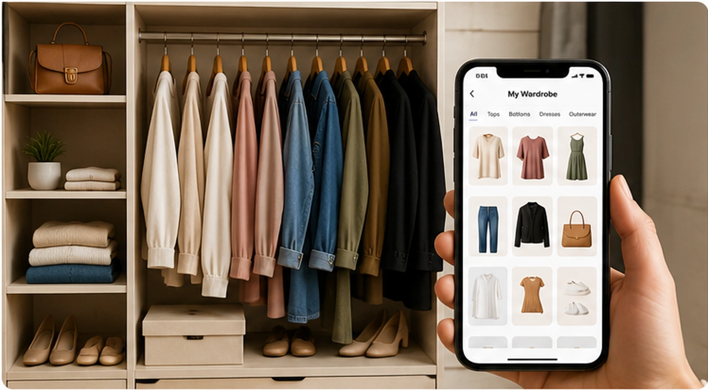
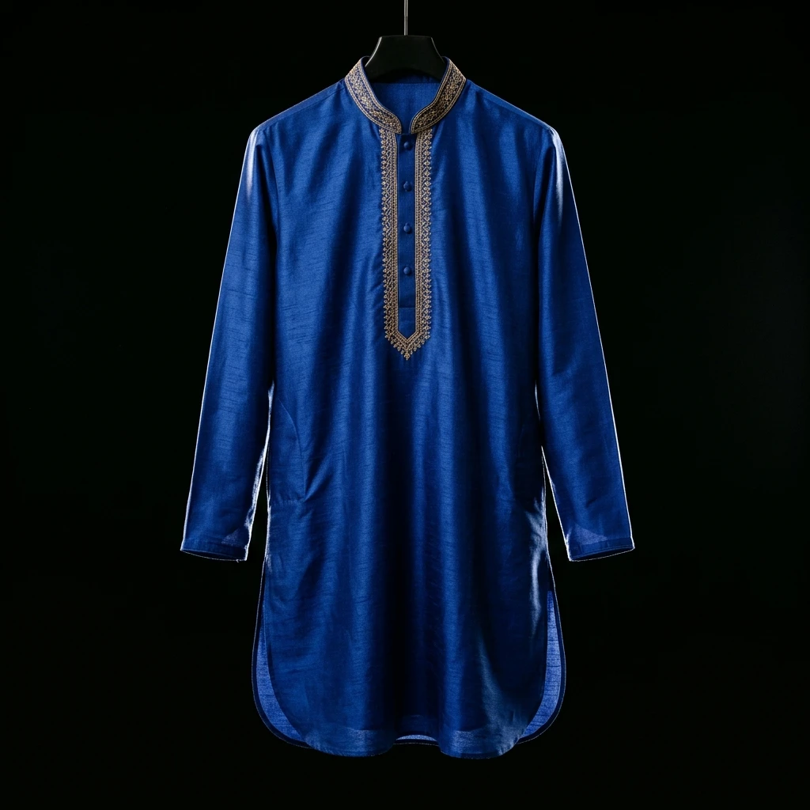

What Is a Digital Wardrobe?
A digital wardrobe is a digital representation of the clothes and accessories you already own — letting you organise, view, and use your wardrobe without physically searching through your closet.
Most people don't need more clothes — they need a better view of what they already have. A digital wardrobe exists to solve a few very ordinary, very common problems:
- —Forgetting what you actually own
- —Clothes sitting unworn for months
- —Struggling to remember combinations
- —Buying duplicates you already have
- —General wardrobe overwhelm
- —Not knowing what's available while shopping
Why Digitise Your Closet?
A physical closet and a digital wardrobe give you two very different views of the same clothes.
Physical Closet
You see whatever happens to be at eye level, on top, or at the front of the rail — everything else is easy to forget.
Digital Wardrobe
You see your entire wardrobe at once, as an organised collection — the same foundation you'll later use for outfit planning.
How Garment Scanning Works
Digitising a garment takes three steps — the goal is less manual organising, not more.
Photograph
Take a photograph of the garment in the Colourity app.
Automatically Analyse
Colourity identifies category, colour, pattern, and formality — no manual tagging required.
Save to Your Wardrobe
The garment becomes part of your digital Wardrobe Library, ready whenever you need it.
Add From Anywhere
You don't necessarily need to photograph every garment yourself. Colourity also supports adding an item straight from a product photo — such as an image shared in from a shopping app — with the same automatic category, colour, pattern, and formality extraction as a photographed garment.
What Your Digital Wardrobe Contains
Every scanned or added garment lives in your personal Wardrobe Library, viewable and manageable at any time. Each item gets its own detail view, showing its photo alongside the attributes Colourity identified — category, colour, pattern, and formality.
It's your closet, structured — not a photo dump, and not a generic catalogue.

See What You Already Own
Most people wear a small fraction of their wardrobe on repeat, simply because the rest is out of sight. Once your closet is digitised, you can browse it as a whole — often noticing pieces you'd genuinely forgotten you owned.
"I forgot I owned this." "I didn't realise I had so many navy pieces." "I can finally see my wardrobe as a whole." This section is about that visibility — actually combining those pieces into outfits is what Outfit Planner is for.
Real-Life Uses
Streamline your morning routine. Instead of pulling physical clothes off hangers to experiment, browse your wardrobe digitally from your couch, during travel, or whenever it's useful.
Before Shopping
Check what you already own before adding to it.
Before Travel
See what clothing you have available before you pack.
Before an Occasion
Understand which relevant pieces you already own.
When It Feels Overwhelming
Browse your wardrobe digitally instead of searching physically.
Frequently Asked Questions
A digital wardrobe is a digital representation of the clothes and accessories you already own — letting you organise, view, and use your wardrobe without physically searching through your closet.
No. Colourity's Garment Scanning automatically identifies category, colour, pattern, and formality from a photograph, so you don't need to tag items by hand. You can also add items from a product photo where supported.
Photograph a garment in the Colourity app, and Colourity AI automatically analyses it and adds it to your Wardrobe Library — no manual tagging required.
Colourity identifies category, colour, pattern, and formality from a photographed garment.
Yes. Colourity supports adding garments from a product photo — for example, an image shared in from a shopping app — with the same automatic attribute extraction as a photographed garment.
The garment is still saved to your Wardrobe Library, where each item has its own detail view showing its photo and attributes.
Once your wardrobe is digitised, Colourity's Outfit Planner can use those garments to build outfit combinations for you — colour harmony, pattern compatibility, and formality computed from the attributes already extracted, rather than decided fresh each time.
Your Wardrobe Is the Foundation
A digital wardrobe becomes more useful once it can be used to plan outfits. Now that you know what you own, the next question is: what should you wear?
See how Outfit Planner worksRelated Masterclass Guides
Start Digitising Your Closet Today
Download Colourity on Android to get started for free.
Get Colourity App